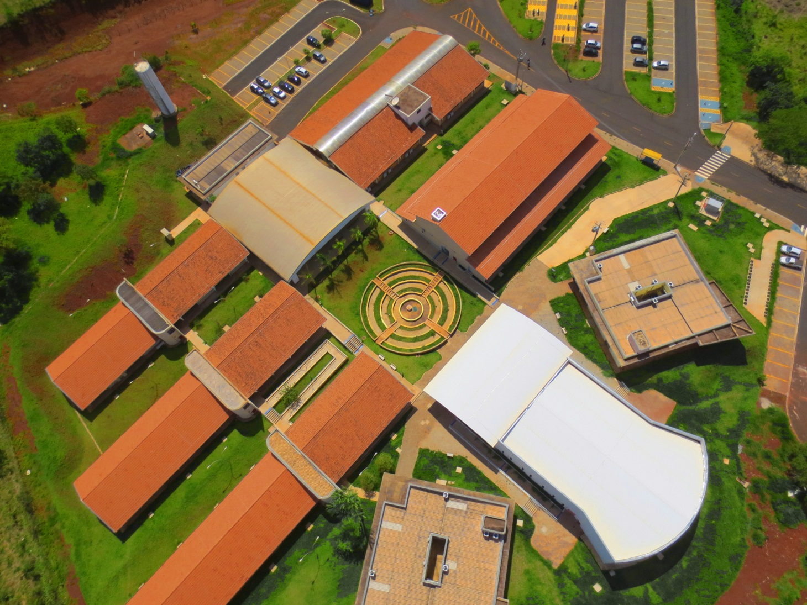

Histórico do campus e sua caracterização |
||
|
O câmpus Araraquara do IFSP, localizado à Rua Doutor Aldo Benedito Pierri, 250, Jd. Paulo Freire, 14804-296, é resultado dos esforços conjuntos de prefeituras da região, da Associação Comercial e Industrial de Araraquara (ACIA), do IFSP e do MEC, conhecedores das necessidades locais, cujas atividades econômicas são baseadas no setor industrial como o sucroalcooleiro, na produção de suco cítrico, na unidade de produção da Embraer, na unidade de manutenção de aeronaves da TAM, no gás natural proveniente da Bolívia e na diversificação dos arranjos produtivos do município, que tem se dado por meio da implantação do Polo de Tecnologia da Informação. Assim, com a ajuda desses setores, atendeu-se à Chamada Pública SETEC/MEC n° 001/2007, relativa à Fase II do Plano de Expansão da Rede Federal de Educação Tecnológica, e foram dados os primeiros passos para a construção do câmpus Araraquara do IFSP. O câmpus iniciou suas atividades em 16 de agosto de 2010, com a conclusão da primeira fase de seu prédio. Foram abertos, na ocasião, os cursos técnicos de Informática e Mecânica, com um total de 160 vagas. Em 2011, o câmpus Araraquara ampliou o número de matrículas em cerca de 130% (Fonte: CRA do Câmpus). Foi aberto o curso Técnico em Mecatrônica e o primeiro curso superior de Licenciatura em Matemática, ambos com grande demanda. Em 2012 foram abertos dois cursos superiores em Tecnologia: Análise e Desenvolvimento de Sistemas e Mecatrônica Industrial. O ano de 2016 foi marcado pela entrega da segunda fase de ampliação do câmpus, com a construção de 9 salas de aula, um amplo auditório, bloco de laboratórios para área de indústria, portaria e adequação dos espaços físicos já existentes. Isso permitiu que os cursos Técnico em Informática Integrado ao Ensino Médio e Técnico em Mecânica Integrado ao Ensino Médio iniciassem suas atividades. Atualmente, o Câmpus Araraquara conta com 08 laboratórios de informática, 09 laboratórios da área da indústria, 14 salas de aulas, 01 laboratório de Ensino de Matemática, 01 Laboratório de Ensino de Ciências, 01 Laboratório de Física, 01 bloco administrativo, 01 biblioteca, 01 auditório e uma quadra poliesportiva. Ainda na segunda fase de construção foram entregues 14 salas para serem compartilhados entre os docentes, localizados no segundo andar do bloco J. A ampliação dos espaços físicos do câmpus é considerada pelos servidores e comunidade em geral um avanço na melhoria das condições de aula e trabalho. No mesmo período foram reformulados os PPCs dos cursos Técnico Concomitante e Subsequente em Informática, Técnico Concomitante e Subsequente em Mecatrônica e superior em Licenciatura em Matemática. Foram encerradas as ofertas de vagas dos cursos Técnico Concomitante e Subsequente em Mecânica e superior de Tecnologia em Mecatrônica Industrial para, em 2017, serem ofertadas vagas para o curso superior de Bacharelado em Engenharia Mecânica, em período integral. O câmpus funciona nos períodos matutino, vespertino e noturno ofertando os seguintes cursos: Licenciatura em Matemática, Tecnologia em Análise e Desenvolvimento de Sistemas, Bacharelado em Engenharia Mecânica, Técnico em Informática, Técnico em Mecatrônica, Técnicos Integrados ao Ensino Médio em Mecânica e Informática. O quadro de pessoal, inicialmente com 13 servidores, hoje conta com 71 professores efetivos e 45 técnicos-administrativos, para um total de 1221 alunos. Em 11 anos de existência, o IFSP câmpus Araraquara já preparou para o mundo do trabalho 675 profissionais de nível técnico e 258 profissionais de nível superior. Além dos cursos regulares, o câmpus possui mais de 70 cursos de extensão aprovados para oferta e já ofertou mais de 50 cursos e cerca de 35 projetos de extensão envolvendo a comunidade externa e interna. O IFSP – Câmpus Araraquara oferece a oportunidade para seus alunos realizarem iniciação científica em diversas áreas do conhecimento. Com perspectiva multidisciplinar, o número de pesquisas realizadas no câmpus tem crescido constantemente. De acordo com o relatório de gestão elaborado em 2019, entre os anos de 2016 e 2018 o câmpus Araraquara superou a marca de 250 produções científicas, chegando a 254 no total. Tais produções devem-se principalmente a alta qualificação do corpo docente e também aos programas de iniciação científica existentes (PIBIFSP, PIVICT, PIBIC, PIBIC-EM-CNPq e PIBITI). Desta forma, as ações de aproximação do Câmpus com as inúmeras empresas do município e da região, alinhadas com a vocação dos docentes do Câmpus para pesquisa, podem ser revertidas em inúmeras oportunidades para fomento aos alunos, principalmente por meio da oferta de bolsas. O IFSP como um todo proporciona aos estudantes, docentes e técnicos administrativos a possibilidade de apresentarem os resultados das pesquisas desenvolvidas na Iniciação Científica, nos projetos de extensão e outros, em congressos realizados em diversas localidades, bem como, para o público interno em eventos como a Semana da Matemática e Educação, da Informática, Semana Nacional de Ciência e Tecnologia e/ou no Encontro de Iniciação Científica e Tecnológica. O câmpus Araraquara do IFSP vem se tornando conhecido no município e na região pela qualidade de seu ensino e pelas parcerias e ações conjuntas realizadas e também, pela participação frequente e benquista em programas de fomento a ações de extensão específicos da Pró-Reitora de Extensão, complementando o valor para bolsas discentes de extensão e aumentando o número de bolsistas envolvidos e projetos desenvolvidos; exemplificando e destacando-se: 1) Realização de pesquisas científicas e tecnológicas aplicadas no reconhecimento e melhora do processo de coleta, triagem e beneficiamento de materiais recicláveis em parceria com Cooperativa Acácia de Catadores de Materiais Recicláveis; 2) Parceria com empresas no desenvolvimento de produtos e soluções de Engenharia – como com a Afinko Soluções em Polímeros Ltda para desenvolvimento de dispositivo para ensaios mecânicos de fios e embalagens, através de projeto aprovado no Programa INOVA TEC (parceria entre CNPq e Instituto Euvaldo Lodi – IEL); 3) Projeto em parceria com a Prefeitura Municipal de Araraquara para confecção de máscaras de tecido para a prevenção do contágio de COVID-19 e geração de renda para as costureiras atendidas pela Coordenadoria Executiva de Trabalho e de Economia Criativa e Solidária do munícipio de Araraquara e 4) Iniciativa dos alunos do curso de Engenharia Mecânica e alguns servidores do câmpus na produção de máscaras de proteção facial (face shields) e doação à Secretaria Municipal de Saúde de Araraquara. 5) Programa de Apoio a Atividades de Extensão “Ensinando Lógica de Programação para Crianças” (projeto desenvolvido em 2018, edital do câmpus e em 2019, edital PRX). 6) Em 2017, o primeiro programa de extensão do Câmpus Araraquara foi aprovado em atendimento a edital específico da Pró-Reitoria de Extensão. Programa é conjunto articulado de projetos e outras ações de extensão (cursos, evento, etc.), com caráter orgânico-institucional, clareza de diretrizes e orientação para um objetivo comum, sendo executado a médio ou longo prazo, integrando ações de extensão, pesquisa e ensino. Com o fomento conquistado, o programa Saber Cuidar: Formação cidadã para autonomia e geração de renda para mulheres foi desenvolvido proporcionando uma qualificação profissional de Cuidadora de Idosos a diversas mulheres em situação de vulnerabilidade da cidade de Araraquara. Em 2021, o programa “Mulheres IFSP – Câmpus Araraquara” em articulação realizada com a Secretaria Nacional de Política para Mulheres, do Ministério da Mulher, da Família e dos Direitos Humanos, teve sua proposta contemplada com recursos financeiros, com alguns câmpus que apresentavam expertise no tema e que já possuíam demandas previamente mapeadas. Em 2022, tal programa oferecerá o curso de Auxiliar de Manutenção Predial a mulheres em situação de vulnerabilidade da cidade de Araraquara. Em 2021, o câmpus Araraquara desenvolveu o Projeto “Integração nas Exatas”, aprovado por um edital de programa institucional de apoio a Atividades de Extensão, “MENINAS NAS EXATAS”, da Pró-Reitoria de Extensão. |
||
Instalações |
||
|  | ||
Rua Doutor Aldo Benedito Pierri, 250 - Jardim Paulo Freire, Araraquara - SP, 14804-296 |
||